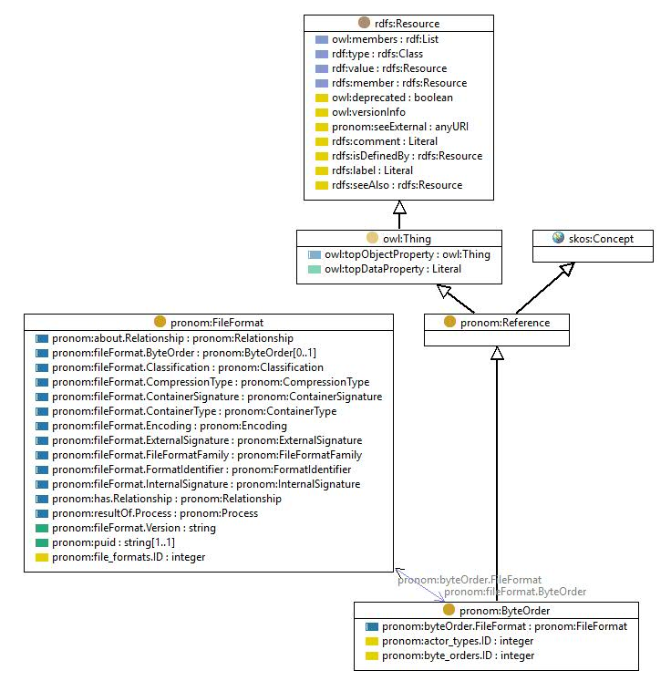

http://data.nationalarchives.gov.uk/formatregistry/def/ByteOrder
Class pronom:ByteOrder

rdf:type
owl:Class
rdfs:comment
Classification for the byteOrder (endianess) types used.
rdfs:label
Byte order
rdfs:subClassOf
pronom:Reference
skos:prefLabel
Byte order
skos:topConceptOf
pronom:PRONOM
Instances
pronom.ByteOrder:bigEndian
,
pronom.ByteOrder:littleEndian
References
as rdfs:domain (
pronom:byte_orders.ID
,
pronom:byteOrder.FileFormat
,
pronom:actor_types.ID
)
as rdfs:range (
pronom:fileFormat.ByteOrder
,
pronom:internalSignature.ByteOrder
,
pronom:byteSequence.ByteOrder
)
as skos:broader (
pronom.ByteOrder:littleEndian
,
pronom.ByteOrder:bigEndian
)
Generated with
TopBraid Composer
by
TopQuadrant, Inc.